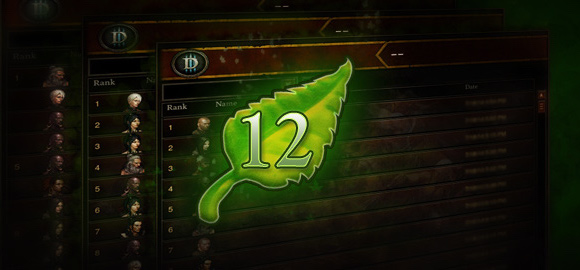
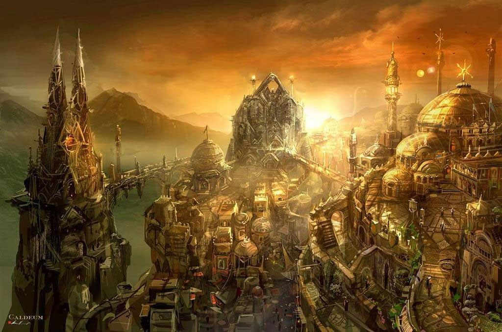

9 listopada 2017
Trzecia część Diablo, jeden z najbardziej wyczekiwanych sequeli w historii gier komputerowych i według wielu jeden z najbardziej rozczarowujących. Ja w tej kwestii zawsze szedłem pod prąd. Uważam, że może nie jest to rewolucja na miarę Diablo 2, ale gra ma swój urok, który sprawia, że z mniejszą, bądź większą regularnością wracam do niej. Ostatnio, zwykle na kilka tygodni wraz z premierą nowego sezonu.

Właśnie dziś około godziny 17:00 czasu europejskiego startuje już dwunasty. Gdyby ktoś nie był na czasie, przerwał lub zakończył rozgrywkę w okolicy lub nawet przed premierą dodatku Reaper of Souls, przypominam, że w sierpniu 2014 roku Blizzard wprowadził sezony rozgrywki. Polega to mniej więcej na tym, że na serwerach mamy globalny reset. Wszyscy gracze rozpoczynają zabawę od totalnego zera: od nowa tworzymy postacie, zdobywamy przedmioty, wbijamy osiągnięcia, wspinamy się po drabince rankingu. Oprócz tego mamy 9 poziomów zadań do wykonania, a ukończenia każdego z nich wiąże się z otrzymaniem nagrody. Zwykle jest do pierdółka w stylu bannera lub ramki z portretem, ale po ukończeniu czwartego skompletujemy pełen set dla swojej postaci, a ósmego otrzymamy dodatkową zakładkę na przedmioty w skrzyni.
Początek sezonu to doskonały moment na powrót do świata Diablo 3. Wszyscy startują od początku, a więc nie ma obaw, że trafi na mega-wymaksowane postacie anihilujące hordy wrogów zanim my zdążymy je zauważyć. Wbrew pozorom w grę dalej gra sporo ludzi, zatem nie ma obaw o brak współtowarzyszy. Naturalnie podstawowym celem dla każdego początkującego lub powracającego po długie przerwie gracza, będzie w pierwszej kolejności zdobycie gratisowego zestawu, a w tym sezonie mamy wybór między:

Pod każdy z wyżej wymienionych zestawów istnieją buildy, które zdecydowanie ułatwiają eksterminację wrogów – polecam serwis Icy Veins. To jak? Widzimy się dziś na battle.necie? Ja po powrocie z pracy odpalam laptopa i znikam. Nie wiem jeszcze tylko czy zacznę rozgrywkę Mnichem czy Łowczynią Demonów.
Aha, i jeszcze taka mała wskazówka, gdyby ktoś naprawdę długo nie grał (ale kiedyś tam ukończył grę). Zapomnijcie o trybie fabularnym i uruchomcie od razu tryb przygody.